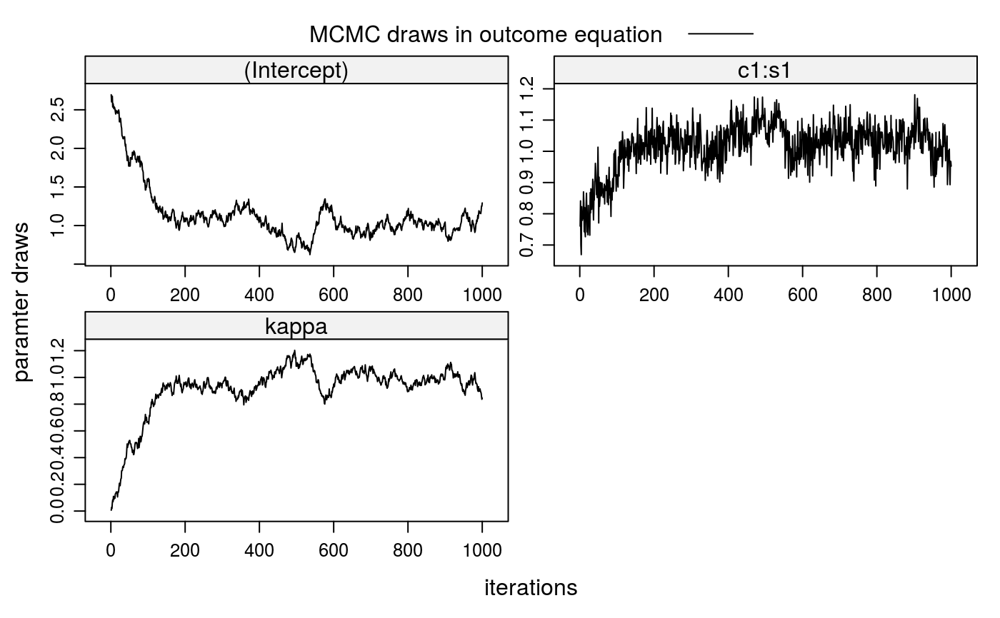
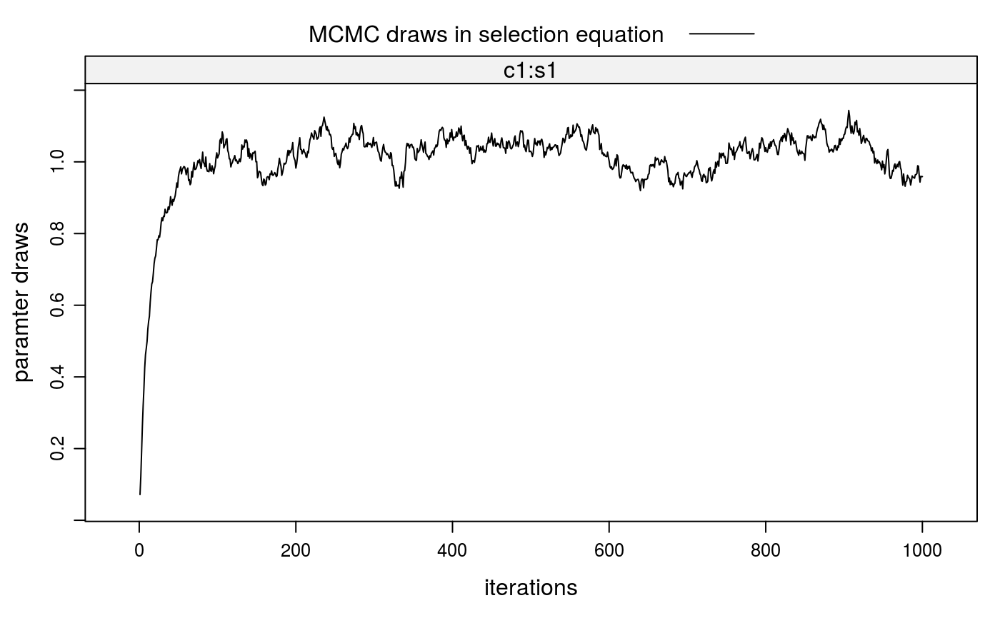

stabit2.RdThe function provides a Gibbs sampler for a structural matching model that estimates preferences and corrects for sample selection bias when the selection process is a two-sided matching game; i.e., a matching of students to colleges.
The structural model consists of a selection and an outcome equation. The Selection Equation determines which matches are observed (\(D=1\)) and which are not (\(D=0\)). $$ \begin{array}{lcl} D &= & 1[V \in \Gamma] \\ V &= & W\beta + \eta \end{array} $$ Here, \(V\) is a vector of latent valuations of all feasible matches, ie observed and unobserved, and \(1[.]\) is the Iverson bracket. A match is observed if its match valuation is in the set of valuations \(\Gamma\) that satisfy the equilibrium condition (see Sorensen, 2007). The match valuation \(V\) is a linear function of \(W\), a matrix of characteristics for all feasible matches, and \(\eta\), a vector of random errors. \(\beta\) is a paramter vector to be estimated.
The Outcome Equation determines the outcome for observed matches. The dependent
variable can either be continuous or binary, dependent on the value of the binary
argument. In the binary case, the dependent variable \(R\) is determined by a threshold
rule for the latent variable \(Y\).
$$ \begin{array}{lcl}
R &= & 1[Y > c] \\
Y &= & X\alpha + \epsilon
\end{array}
$$
Here, \(Y\) is a linear function of \(X\), a matrix of characteristics for observed
matches, and \(\epsilon\), a vector of random errors. \(\alpha\) is a paramter vector to
be estimated.
The structural model imposes a linear relationship between the error terms of both equations as \(\epsilon = \kappa\eta + \nu\), where \(\nu\) is a vector of random errors and \(\kappa\) is the covariance paramter to be estimated. If \(\kappa\) were zero, the marginal distributions of \(\epsilon\) and \(\eta\) would be independent and the selection problem would vanish. That is, the observed outcomes would be a random sample from the population of interest.
stabit2(OUT = NULL, SEL = NULL, colleges = NULL, students = NULL, outcome = NULL, selection, binary = FALSE, niter, gPrior = FALSE, censored = 1, thin = 1, nCores = max(1, detectCores() - 1), ...)
| OUT | data frame with characteristics of all observed matches, including
market identifier |
|---|---|
| SEL | optional: data frame with characteristics of all observed and unobserved matches, including
market identifier |
| colleges | character vector of variable names for college characteristics. These variables carry the same value for any college. |
| students | character vector of variable names for student characteristics. These variables carry the same value for any student. |
| outcome | formula for match outcomes. |
| selection | formula for match valuations. |
| binary | logical: if |
| niter | number of iterations to use for the Gibbs sampler. |
| gPrior | logical: if |
| censored | draws of the |
| thin | integer indicating the level of thinning in the MCMC draws. The default |
| nCores | number of cores to be used in parallel Gibbs sampling. |
| ... | . |
Sorensen, M. (2007). How Smart is Smart Money? A Two-Sided Matching Model of Venture Capital. Journal of Finance, 62 (6): 2725-2762.
##\dontrun{ ## --- SIMULATED EXAMPLE --- ## 1. Simulate two-sided matching data for 20 markets (m=20) with 100 students ## (nStudents=100) per market and 20 colleges with quotas of 5 students, each ## (nSlots=rep(5,20)). True parameters in selection and outcome equations are ## all equal to 1. xdata <- stabsim2(m=20, nStudents=100, nSlots=rep(5,20), verbose=FALSE, colleges = "c1", students = "s1", outcome = ~ c1:s1 + eta + nu, selection = ~ -1 + c1:s1 + eta )#> Generating data for 20 matching markets...#> m.id y (Intercept) eta nu c1:s1 c1 #> 1 1 4.043161 1 1.843862 1.0241395 0.17515964 -0.3963161 #> 2 1 4.252354 1 3.241040 -0.2741297 0.28544335 -0.3963161 #> 3 1 1.837553 1 2.128452 -1.4896441 0.19874488 -0.3963161 #> 4 1 4.400099 1 1.997213 1.2346701 0.16821544 -0.3963161 #> 5 1 5.679860 1 2.198810 2.2819670 0.19908279 -0.3963161 #> 6 1 1.889756 1 1.955294 -1.0164562 -0.04908123 -0.1627601 #> s1 c.id s.id #> 1 -0.4419695 1 5 #> 2 -0.7202416 1 44 #> 3 -0.5014807 1 54 #> 4 -0.4244476 1 76 #> 5 -0.5023333 1 81 #> 6 0.3015557 2 11## 2. Correction for sorting bias when match valuations V are observed ## 2-a. Bias from sorting lm1 <- lm(y ~ c1:s1, data=xdata$OUT) summary(lm1)#> #> Call: #> lm(formula = y ~ c1:s1, data = xdata$OUT) #> #> Residuals: #> Min 1Q Median 3Q Max #> -5.1032 -0.8373 0.0570 0.8745 3.2334 #> #> Coefficients: #> Estimate Std. Error t value Pr(>|t|) #> (Intercept) 2.69375 0.03142 85.75 <2e-16 *** #> c1:s1 0.75852 0.04717 16.08 <2e-16 *** #> --- #> Signif. codes: 0 ‘***’ 0.001 ‘**’ 0.01 ‘*’ 0.05 ‘.’ 0.1 ‘ ’ 1 #> #> Residual standard error: 1.248 on 1998 degrees of freedom #> Multiple R-squared: 0.1146, Adjusted R-squared: 0.1141 #> F-statistic: 258.6 on 1 and 1998 DF, p-value: < 2.2e-16 #>#> [1] -0.2062932#> #> Call: #> lm(formula = V ~ -1 + c1:s1, data = xdata$SEL) #> #> Residuals: #> Min 1Q Median 3Q Max #> -3.9728 -0.6657 -0.0007 0.6792 3.9280 #> #> Coefficients: #> Estimate Std. Error t value Pr(>|t|) #> c1:s1 1.00548 0.00985 102.1 <2e-16 *** #> --- #> Signif. codes: 0 ‘***’ 0.001 ‘**’ 0.01 ‘*’ 0.05 ‘.’ 0.1 ‘ ’ 1 #> #> Residual standard error: 1.003 on 39999 degrees of freedom #> Multiple R-squared: 0.2067, Adjusted R-squared: 0.2067 #> F-statistic: 1.042e+04 on 1 and 39999 DF, p-value: < 2.2e-16 #>etahat <- lm2a$residuals[xdata$SEL$D==1] lm2b <- lm(y ~ c1:s1 + etahat, data=xdata$OUT) summary(lm2b)#> #> Call: #> lm(formula = y ~ c1:s1 + etahat, data = xdata$OUT) #> #> Residuals: #> Min 1Q Median 3Q Max #> -3.5938 -0.6990 0.0384 0.7078 2.9276 #> #> Coefficients: #> Estimate Std. Error t value Pr(>|t|) #> (Intercept) 1.00160 0.05774 17.35 <2e-16 *** #> etahat 0.98683 0.03025 32.63 <2e-16 *** #> c1:s1 1.02606 0.03898 26.32 <2e-16 *** #> --- #> Signif. codes: 0 ‘***’ 0.001 ‘**’ 0.01 ‘*’ 0.05 ‘.’ 0.1 ‘ ’ 1 #> #> Residual standard error: 1.008 on 1997 degrees of freedom #> Multiple R-squared: 0.4225, Adjusted R-squared: 0.4219 #> F-statistic: 730.4 on 2 and 1997 DF, p-value: < 2.2e-16 #>## 3. Correction for sorting bias when match valuations V are unobserved ## 3-a. Run Gibbs sampler (when SEL is given) fit2 <- stabit2(OUT = xdata$OUT, SEL = xdata$SEL, outcome = y ~ c1:s1, selection = ~ -1 + c1:s1, niter=1000 )#> Drawing 1000 MCMC samples...## 3-b. Alternatively: Run Gibbs sampler (when SEL is not given) fit2 <- stabit2(OUT = xdata$OUT, colleges = "c1", students = "s1", outcome = y ~ c1:s1, selection = ~ -1 + c1:s1, niter=1000 )#> Drawing 1000 MCMC samples...## 4. Implemented methods ## 4-a. Get coefficients fit2#> Call: #> stabit2.default(OUT = xdata$OUT, colleges = "c1", students = "s1", #> outcome = y ~ c1:s1, selection = ~-1 + c1:s1, niter = 1000) #> #> Coefficients: #> o.(Intercept) o.c1:s1 o.kappa s.c1:s1 #> 0.9946804 1.0348062 0.9944402 1.0207619#> #> Coefficients for multi-index sample selection model. #> Method: Sorensen (2007), two-sided matching market #> #> Call: #> stabit2.default(OUT = xdata$OUT, colleges = "c1", students = "s1", #> outcome = y ~ c1:s1, selection = ~-1 + c1:s1, niter = 1000) #> #> Selection equation: #> Estimate StdErr t.value p.value #> c1:s1 1.020762 0.096168 10.614 < 2.2e-16 *** #> #> Outcome equation: #> Estimate StdErr t.value p.value #> (Intercept) 0.994680 0.345121 2.8821 0.003992 ** #> c1:s1 1.034806 0.075968 13.6217 < 2.2e-16 *** #> kappa 0.994440 0.198319 5.0143 5.792e-07 *** #> --- #> Signif. codes: 0 '***' 0.001 '**' 0.01 '*' 0.05 '.' 0.1 ' ' 1#> #> Marginal effects for multi-index sample selection model. #> Method: Sorensen (2007), two-sided matching market #> #> Call: #> stabit2.default(OUT = xdata$OUT, colleges = "c1", students = "s1", #> outcome = y ~ c1:s1, selection = ~-1 + c1:s1, niter = 1000) #> #> Selection equation: #> Estimate StdErr t.value p.value #> c1:s1 0.287952 0.027129 10.614 < 2.2e-16 *** #> #> Outcome equation: #> Estimate StdErr t.value p.value #> (Intercept) 0.994680 0.345121 2.8821 0.003992 ** #> c1:s1 1.034806 0.075968 13.6217 < 2.2e-16 *** #> kappa 0.994440 0.198319 5.0143 5.792e-07 *** #> --- #> Signif. codes: 0 '***' 0.001 '**' 0.01 '*' 0.05 '.' 0.1 ' ' 1## 4-d. Also try the following functions #coef(fit2) #fitted(fit2) #residuals(fit2) #predict(fit2, newdata=NULL) ## 5. Plot MCMC draws for coefficients plot(fit2)##}